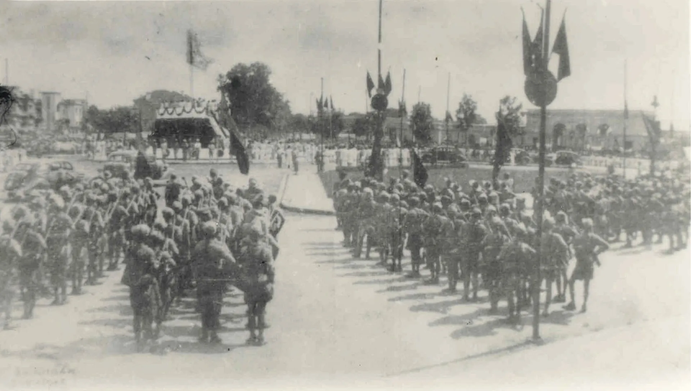
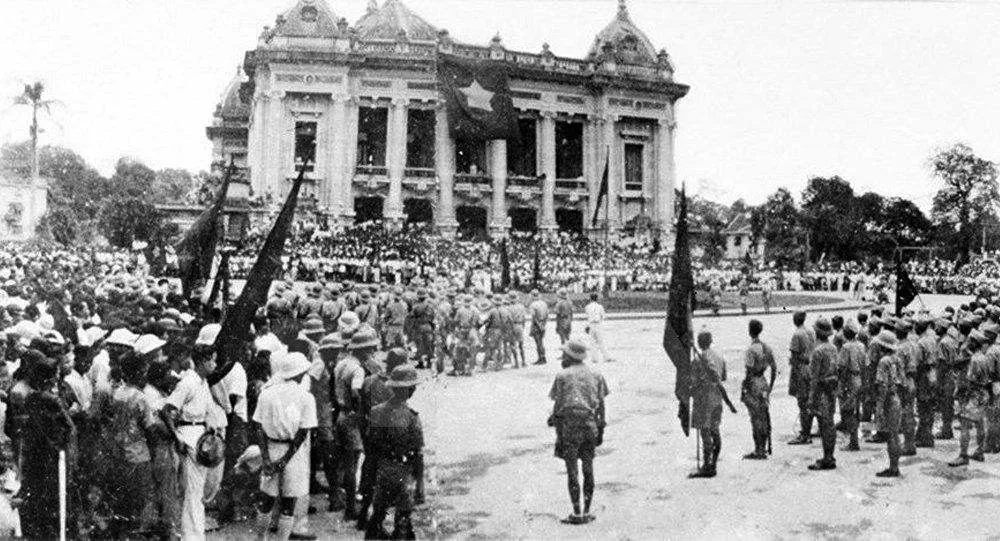
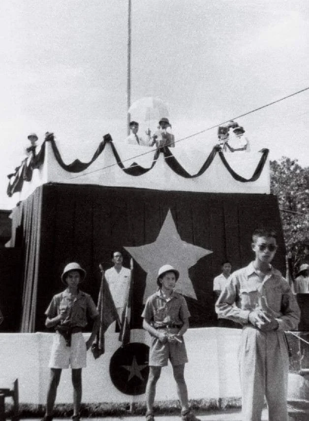
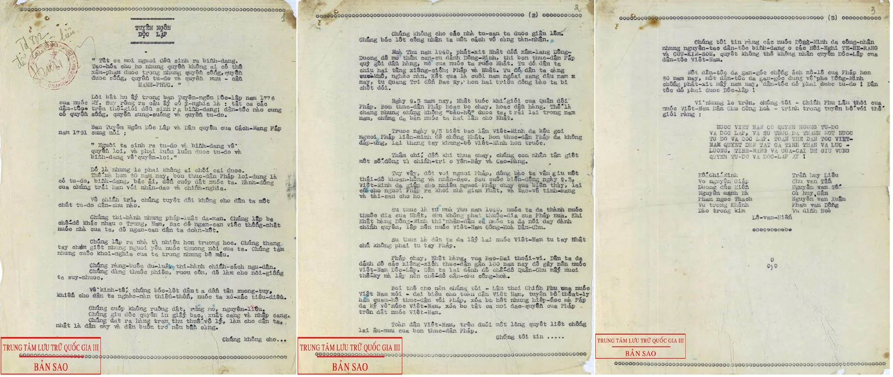
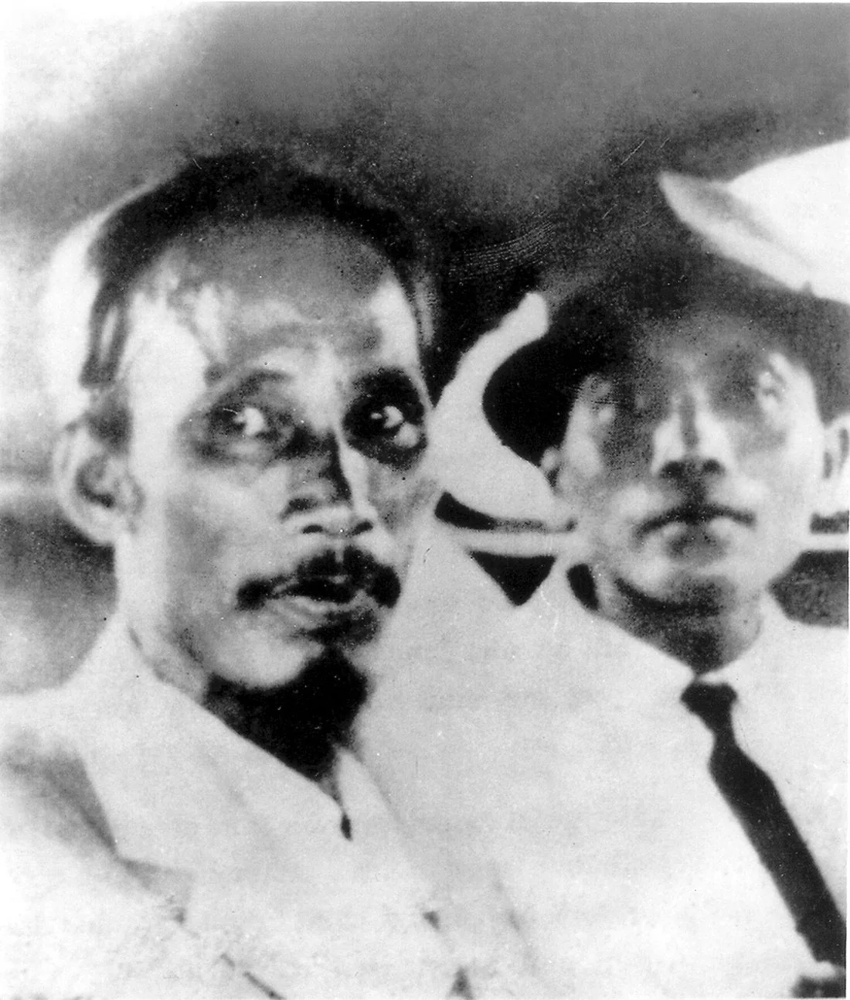
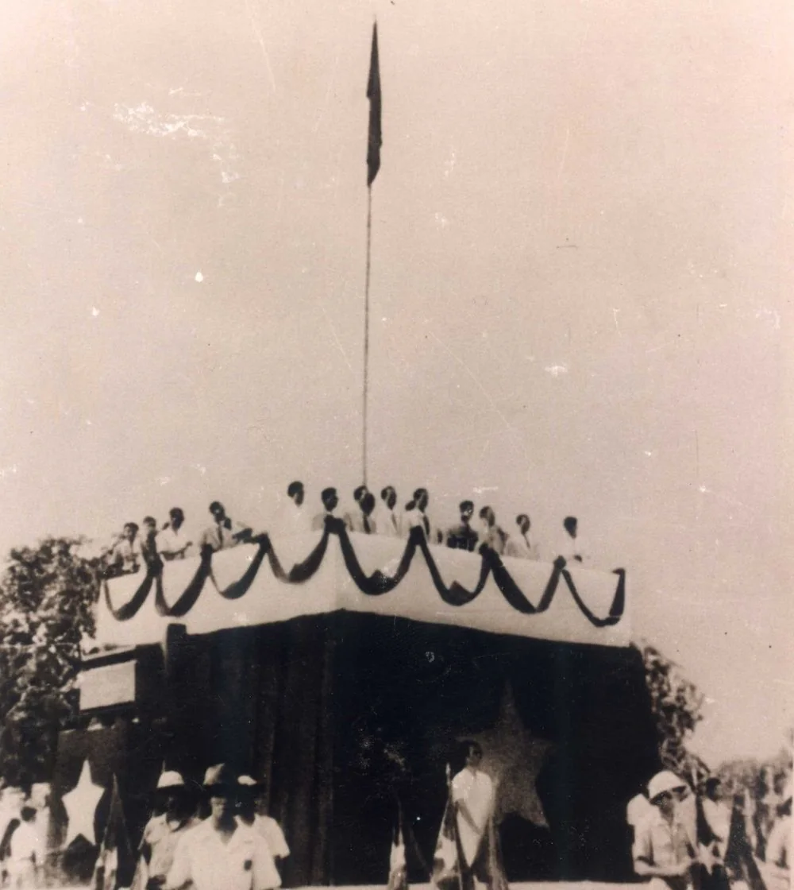

Một buổi chiều ở Ba Đình, một quốc gia bắt đầu.
Ngày 2 tháng 9 năm 1945, bản Tuyên ngôn Độc lập khai sinh nước Việt Nam Dân chủ Cộng hòa.

Cách mạng Tháng Tám
Chỉ trong hai tuần cuối tháng Tám, chính quyền thực dân sụp đổ trên khắp ba miền. Cả nước hướng về Hà Nội.
- 19.08Khởi nghĩa thắng ở Hà Nội
- 23.08Triều đình Huế đầu hàng
- 25.08Sài Gòn và Nam Bộ giành chính quyền
- 30.08Vua Bảo Đại thoái vị
Hàng vạn người đổ về Ba Đình
Nắng chiều tháng chín. Cờ đỏ rực trên lễ đài, đội danh dự đứng nghiêm dưới cột cờ. Cả quảng trường nín thở chờ giờ khai mạc.

Chủ tịch Hồ Chí Minh
Vị Chủ tịch đầu tiên của nước Việt Nam Dân chủ Cộng hòa bước lên lễ đài. Trước quốc dân đồng bào và thế giới, Người đọc bản Tuyên ngôn Độc lập.

Hỡi đồng bào cả nước,
Tất cả mọi người đều sinh ra có quyền bình đẳng. Tạo hóa cho họ những quyền không ai có thể xâm phạm được; trong những quyền ấy, có quyền được sống, quyền tự do và quyền mưu cầu hạnh phúc.

Nước Việt Nam có quyền hưởng tự do và độc lập, và sự thật đã thành một nước tự do độc lập.
Toàn thể dân tộc Việt Nam quyết đem tất cả tinh thần và lực lượng, tính mạng và của cải để giữ vững quyền tự do, độc lập ấy.

Lá cờ đỏ sao vàng tung bay
Lần đầu tiên trước quốc dân đồng bào, lá cờ của một nước Việt Nam độc lập được kéo lên giữa Quảng trường Ba Đình.
CHÚC MỪNG QUỐC KHÁNH 2/9
Bấm vào bầu trời để bắn thêm pháo hoa
Từ buổi chiều Ba Đình ấy, một quốc gia đã đi qua 81 năm.
Nguồn tư liệu & bản quyền
- Ảnh tư liệu
- Trung tâm Lưu trữ Quốc gia III, qua Wikimedia Commons — phạm vi công cộng (public domain). Đã số hoá, cắt và nén lại.
- Lời trích
- Tuyên ngôn Độc lập, Hồ Chí Minh, đọc tại Quảng trường Ba Đình ngày 2.9.1945.
- Nhạc nền
- “Heroic Age” — Kevin MacLeod (incompetech.com), giấy phép Creative Commons BY 4.0.
- Hiệu ứng
- Pháo hoa, tàn lửa, cờ tung bay và âm thanh hiệu ứng được dựng bằng mã trong trình duyệt — không dùng video quay sẵn.
- Phông chữ
- Playfair Display & Be Vietnam Pro — SIL Open Font License, tự lưu trữ.